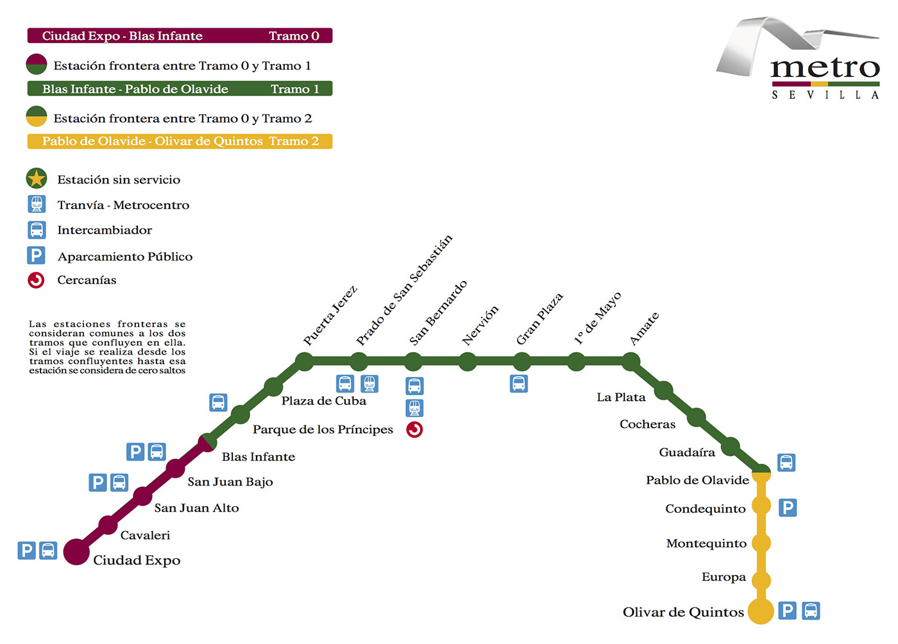
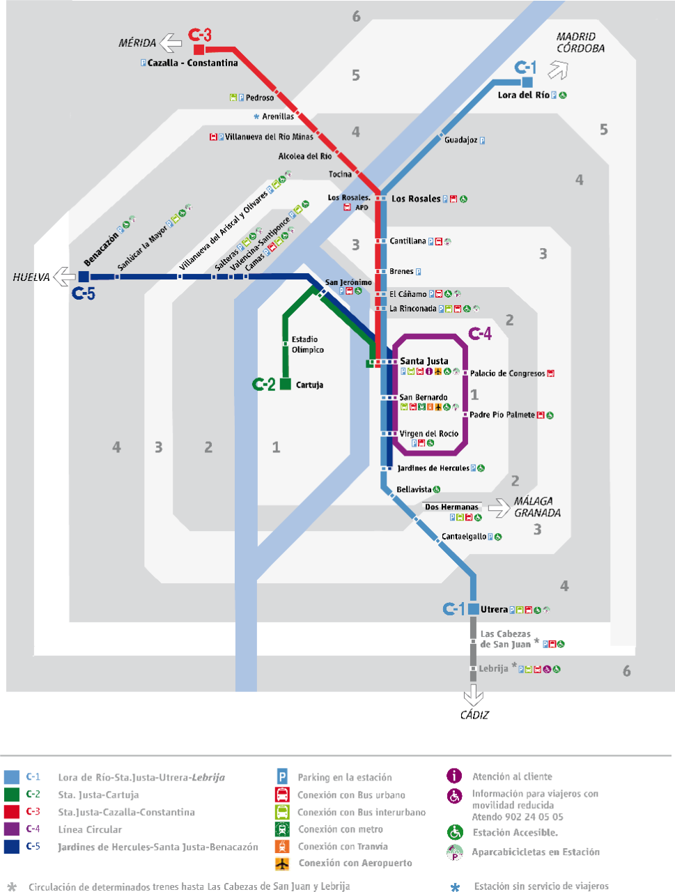

El Área Metropolitana de Sevilla es una de las aglomeraciones urbanas con menor desarrollo de su trazado ferroviario, traduciendose en una gran falta de conectividad entre zonas, mayores tiempos de desplazamiento de los ciudadanos a sus lugares de trabajo o residencia, una gran congestión de tráfico rodado y niveles insostenibles de contaminación y polución.
A día de hoy, la red de Metro de Sevilla solo cuenta con la línea 1 de Metro. A corto plazo solo hay planes de realizar el trazado norte de la Línea 3, mientras que la Línea 2 corre peligro de quedar congelada otros 20 años. Este mapa no solo muestra la línea completa de Metro, sino que recoge la propuesta de SevillaQuiereMetro de conectar las líneas 1 y 2 en Nervión y Santa Justa para aumentar así la interconectividad entre zonas. También se recoge la propuesta de ampliación de la Línea 2 por el Aljarafe de Camas al Hospital San Juan de Dios según la asociación SevillaQuiereMetro. El mapa también recoge la línea completa de Metrocentro, que se extendería de Santa Justa a la Encarnación para volver a Plaza Nueva y convertirla en una línea circular que puede favorecer la movilidad turística.
Además, el mapa incorpora las propuestas de Tranvías de Dos Hermanas y Alcalá, corrobora la importancia de la creación de la estación de Cercanías de Casilla de los Pinos, y elabora una simplificación de la Línea de Tranvía del Aljarafe, teniendo en cuenta la propuesta de expansión de la Línea 2 de Metro a San Juan de Dios, y la elaboración de dos ramales de la Línea 2 de Cercanías que conducirían a Bormujos y La Puebla del Río. De este modo, se busca no solo favorecer la movilidad entre los pueblos del Aljarafe y Sevilla, sino también entre ellos mismos. Además, se propone una cuarta línea de tranvía que conecte el Hospital San Lázaro con la estación de Cercanías de San Jerónimo y llegue hasta la Rinconada, conectando la Algaba.
Por último, se propone una mejora de la red de Cercanías basada en la propuesta de de la Asociación para la Igualdad y la Mejora del Transporte (Apimt), pero unificando líneas para aumentar la competitividad y el flujo de viajeros. De este modo, además de la expansión de la Línea 2 y su ramal al Aljarafe, se propone la conexión directa entre el centro de Sevilla y el Aeropuerto (el cual no cuenta actualmente con ninguna conexión ferroviaria con la ciudad), la creación de una línea que lleve a Alcalá de Guadaira y Carmona, y la transformación de la línea de Media Distancia Utrera-Marchena-Osuna a una línea de Cercanías. Finalmente, se propone que la línea a Alcalá de Guadaira sea una línea semicircular que la conecte tanto con Sevilla como Dos Hermanas, siendo clave para ello la estación existente de Pio Palmete.


Sevilla Quiere Metro
Sevilla21
Sevilla se Mueve
Asociación para la Igualdad y la Mejora del Transporte
Autor: Joaquín Osorio Arjona (Doctor en Geografía, Profesor en la UNED). https://www.uned.es/universidad/docentes/geografia-historia/joaquin-osorio-arjona.html